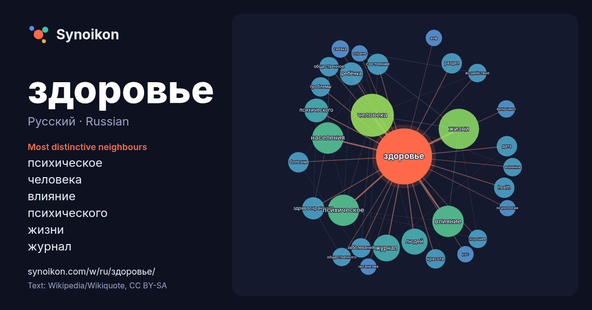

Русский · Russian · popular word
здоровье
“health” · The words found around it in 820 instances from Russian Wikipedia, Wikiquote.

Most distinctive neighbours
- психическое 27×
- человека 17×
- влияние 17×
- психического 16×
- жизни 14×
- журнал 14×
- ребёнка 13×
- health 12×
- здравоохранения 12×
- раздел 11×
- красота 11×
- общественное 10×
- дата 10×
- заболеваний 10.0×
- состояние 9.8×
- хорошее 9.5×
- болезни 9.4×
- воздействие 9.3×
- людей 9.2×
- табака 8.7×
× = how many times more often than in general Russian Wikipedia text.
Most frequent neighbours
- человека 49
- жизни 43
- влияние 26
- населения 26
- психическое 26
- журнал 19
- людей 18
- является 17
- психического 15
- ребёнка 14
- здравоохранения 13
- состояние 12
- health 11
- болезни 11
- дата 11
- раздел 11
- заболеваний 10
- красота 10
- общественное 10
- октября 10
In context
- Групповое здоровье — здоровье социальных и этнических групп. Региональное здоровье — здоровье населения административных территорий. Общественное здоровье — здоровье Wikipedia snippets · Здоровье
- Здоро́вье: Здоровье — состояние живого организма, при котором организм в целом и все органы способны полностью выполнять свои функции; отсутствие недуга Wikipedia snippets · Здоровье (значения)
- «Здоро́вье» — советская и российская еженедельная телепрограмма о здоровье человека и обо всём, что с этим связано. Выходит в эфир на «ОРТ/Первом канале» Wikipedia snippets · Здоровье (телепередача)
- «Здоровье» — ежемесячный научно-популярный российский (до 1991 — советский) журнал о здоровье человека и способах его сохранения. Издаётся в Москве с 1955 года Wikipedia snippets · Здоровье (журнал)
- Психическое здоровье (духовное или душевное, иногда ментальное здоровье) — согласно определению Всемирной организации здравоохранения, это состояние благополучия Wikipedia snippets · Психическое здоровье
- одновременно и здоровое тело, и здоровый дух. Выражение часто трактуют ошибочно, будто бы здоровье тела само по себе ведёт к душевному здоровью. Однако это Wikipedia snippets · В здоровом теле здоровый дух
- поэтому их репродуктивное здоровье неотделимо от гендерного равенства. Нарушение таких прав также усугубляет бедность. Здоровье подростков является глобальной Wikipedia snippets · Сексуальное здоровье
- участие в программе «Здоровье». В марте 2022 года «Первым каналом» принято решение о временной приостановке выхода программы «Жить здорово!», в связи с изменением Wikipedia snippets · Жить здорово!
More Russian words
- бог
- власть
- вода
- деньги
- жизнь
- золото
- искусство
- истина
- история
- климат
- кошка
- мост
- наука
- пища
- поезд
- природа
- работа
- семья
- сердце
- смерть
- собака
- язык
Precomputed on 2026-10-09 with default settings (±5 words, medium corpus). The interactive map can refresh it with live data.